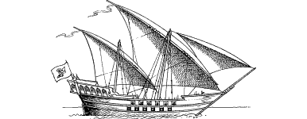

16
You climb the stairs to the foredeck and scan the horizon for signs of a pirate raider. Less than a mile away you can see a huge vessel with a purple mainsail sailing towards the strait. Captain Radyard appears at your side and he views the approaching craft through his telescope.
{kind=link}

‘Weigh anchor!’ he orders. ‘Unfurl all canvas. I want every ounce of speed she’ll give us, lads.’ The captain’s urgent orders stir the crew into a frenzy of activity. As they set about their duties, you ask Radyard what is wrong. Without taking his eye from his telescope he says:
‘That’s Sesketera’s flagship—The Triasus. I’d recognize her sails anywhere. That scoundrel must want you badly to have sent the pride of his battle fleet after the likes of us.’
With all canvas lowered, the Seasprite cuts a rapid course through the glassy blue waters of Kastrow’s Door. Yet The Triasus has the advantage and relentlessly she closes the gap until no more than 30 yards of water separate her from the Seasprite’s starboard beam. The Siyenese cajole and curse and wave their fists at their pursuers, but their bravado soon crumbles when they find themselves staring into the muzzles of a double row of wide-bored naval cannon. A warning shot from a swivel gun whistles through the Seasprite’s rigging, and then you hear the voice of Sesketera himself.
‘Surrender the Northlander to me, captain,’ he shouts, through a loudhailer, ‘or I’ll have my gunners blow your ship out of the water!’
Radyard glances at you with fear in his eyes. He knows that he cannot outrun The Triasus, and he also knows that Sesketera is not a man who is given to making idle threats.
If you wish to volunteer to surrender to Sesketera in order to save Captain Radyard and his ship, turn to 113.
If you decide instead to abandon the Seasprite and attempt to swim for the shore, turn to 92.